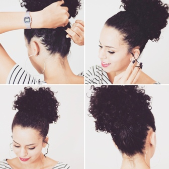

TUDO SOBRE CABELO
Você irá encontrar dicas e tudo que precisa saber.
Elas gostam de cabelo
- Hidratação para deixar mais bonito o tão amado cabelo.
Cacho Macio
Lave-os utilizando apenas água morna, pois a água muito quente resseca ainda mais os fios. Quando o cabelo não tem movimento, técnicas como o relaxamento (espécie de alisamento) e até o permanente, que constrói cachos, dão forma aos fios. Massageie o couro cabeludo durante a lavagem, para estimular a produção de sebo protetor nos cabelos.
Liso Perfeito
Hidrate sempre os cabelos. Quanto mais os cabelos estiverem hidratados, mais tempo os fios ficarão lisos e brilhantes.
Para isso, beba bastante água e use produtos hidratantes, como condicionadores e máscaras. Procure fazer hidratações capilares periodicamente.
- - Mantenha os fios sempre limpos, cabelos lisos tendem a ser mais oleosos, por isso uma boa higiene diariamente é fundamental.
- - Escolha bem os produtos que você irá usar no seu cabelo.
- - Ter uma alimentação saudável ajuda bastante o fio do seu cabelo.
Crespo hidratado
- - Não penteie os cabelos pela manhã, passe somente os dedos entre os cachos usando um creme para ativá-los.
- - Prenda os cabelos para dormir, para não estragar os cachos.
- - Não durmam de cabelos molhados.
- Penteados
Trança
- -Prepare a cabeleira com mousse ou uma pomada, pra dar textura aos fios. Divida o cabelo no meio da testa à nuca.
- -Escolha um lado para começar a trançar e reserve o outro, prendendo num coque, como na foto acima.
- -Comece separando três mechas, logo na parte da frente e trance normalmente, puxando pra trás.
- -Ao invés de passar as mechas por cima, passe cada uma por baixo da mecha central. Lembre-se: o movimento é contrário à de uma mecha normal.
- - No alto da cabeça ela fica mais agressiva e próximo a orelha seguindo uma meia lua. Você decide o impacto que quer causar.
- -Quando a mecha sair da circunferência da cabeça, na altura nuca, os fios devem ser bem tracionados e apertados, pra ficar bem rente a cabeça. A partir daí, faça a trança simples até as pontas.
- -O ideal é que fique com um acabamento bagunçado, sem estar perfeitinho. Então depois de pronta, solte delicadamente os gominhos da trança.
- -Repita o processo todo do outro lado, alimentando as mechas por baixo.
OBS: Esse penteado é ótimo para cabelos Finos

Afro Puff
- – Comecei amassando o meu cabelo e desgrudando a raiz com os dedos.
- – Depois usei o pente garfo para deixar o cabelo ainda mais volumoso.
- – Para prender o eu gosto de usar uma meia, mas também da super certo com um cadarço ou um elástico.
- – Em seguida passei a meia atrás do meu cabelo e amarrei.
- – Fui apertando e empurrando para trás, deixando bem firme.
- – Para dar um “charminho” gosto de soltar alguns fios.
OBS: Ah! Se vocês quiserem fixar melhor os fiozinhos que ficam soltos podem passar um pouquinho de creme ou gel na raiz.
